Trains
Up to 24 services across one to four pages. Planned time is struck through when a revised time is reported. A red X marks a cancellation; a blank or timetable-only value does not prove punctuality.
Read the train guide →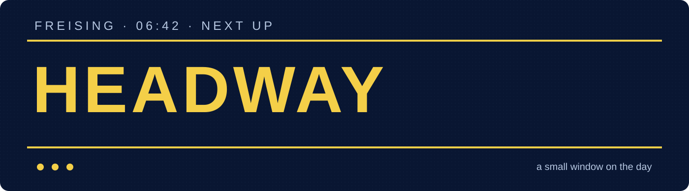
A personal build · Freising · ESP32-C3
I wanted to see the station before I left home: the next train, whether it had been running late over the last few hours, and the weather while I brush my teeth and get ready.
Headway turns that routine into a little always-on sign. I picture Model A beside the bathroom mirror or by the front door. Model B has a 15° stand for my desk.
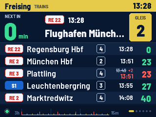
Why I made it
The station board is useful when I am already there. I wanted the same quick glance earlier, at home, when there is still time to change plans. The three-hour strip at the bottom is my way of asking, “Has it been a messy morning?” It shows reported lateness in fetched departures, with gaps where the feed could not tell me enough.
The weather pages matter in the same ordinary way: do I need a jacket, will rain arrive while I am out, and what does the next part of the day look like? The board cycles only if I ask it to; otherwise a tap moves to the next page.
Sign at my Bahnhof. It is the reference that started the project.
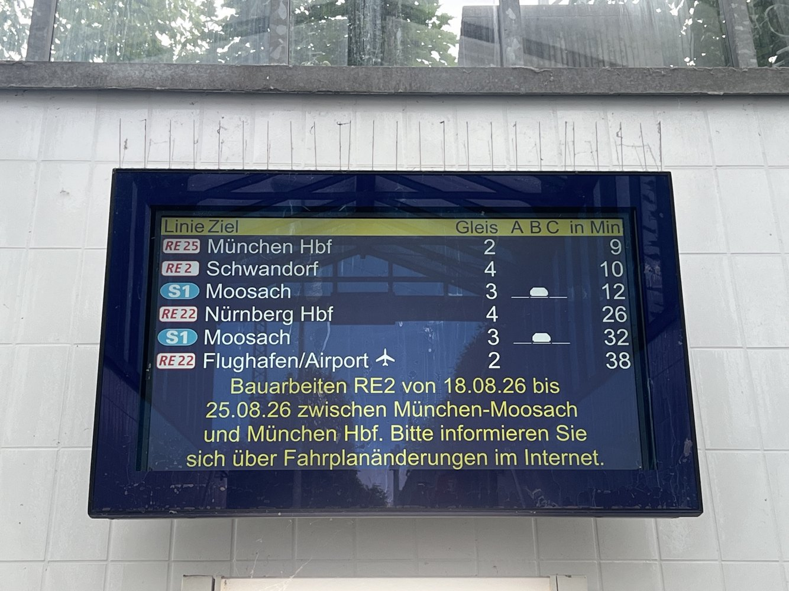
The real build
These are phone photos of a powered prototype at home. The software galleries further down are clean renders from drawing code. The enclosure shown here is a physical prototype; I still need to confirm the exact fit of the latest CAD revisions.
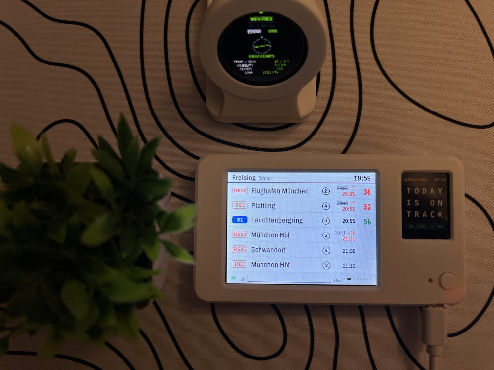
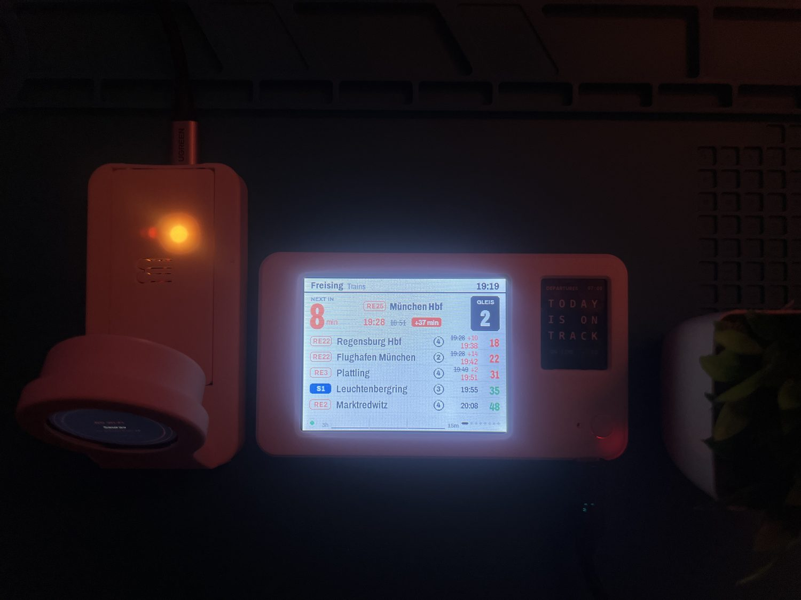
Each silent clip follows one look across train, bus and weather pages. These are compressed excerpts; the original full-resolution MOV files stay outside the repository.
The display
The same train, bus and weather data can look like a classic sign, a bright platform board, an amber dot matrix, paper, or split flaps. Original is the default. These are renders from the real drawing code using sample data; the 1.2.8 screens keep the same layout previews, while the outlook temperature-history graph now spans each day's low to high.
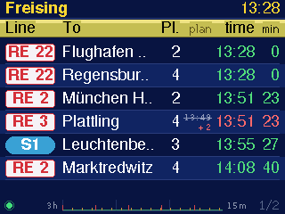
The next trains at Freising: line, destination, platform, revised departure and minutes to go. The footer plots reported lateness from the last three hours.
The original navy sign keeps the layout that started the project.
Every symbol and field, explained →Up to 24 services across one to four pages. Planned time is struck through when a revised time is reported. A red X marks a cancellation; a blank or timetable-only value does not prove punctuality.
Read the train guide →Bahnhof Stadtbus and P+R-Platz have separate pages. They show up to ten departures each, including a bay when the feed provides one. Long via destinations can scroll if enabled.
Read the bus guide →Current conditions and a twelve-hour rain and temperature chart, followed by three days of highs, lows, wind, UV, daylight and moon phase. The backdrop follows day, dusk and night.
Read the weather guide →The three-hour train strip averages comparable realtime lateness in the fetched board. Separate marks show cancellations and incomplete coverage. Each feed has its own health state.
How the delay graph works →The small graph on the outlook page now draws each day's low-to-high temperature range. The two numbers at its left mark the coldest low and warmest high in the window. These are weather-service values, not measurements from the board.
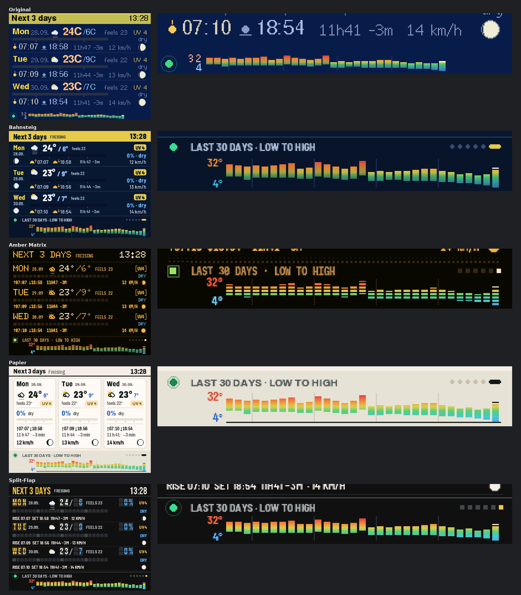
Under the hood
The flow is simple enough to follow without reading the firmware. It also explains what happens when one service goes quiet.
Fresh data depends on Wi-Fi and upstream coverage. During an outage, retained rows can become stale; countdowns still advance and expired rows leave the board. Missing graph samples remain gaps.
The one-button routine
Headway-Setup Wi-Fi network.http://192.168.4.1/ in a browser.The cards below are a reading guide to the device's setup portal. The actual portal appears only in setup mode and scrolls as one narrow page on a phone.
Choose a 2.4 GHz network or type its name. A blank password keeps the saved one for the same network. Hidden networks can be entered by name.
Detect an approximate place from the internet connection, or type a town. This changes weather only; the transport stops remain in Freising.
Pick Original, Bahnsteig, Amber Matrix, Papier or Split-Flap. The portal preview changes at once; the board changes after Save.
Automatic page changes are off by default. Set a dwell interval if enabled. Destination scrolling is a separate choice and also defaults to off.
Settings are stored and the device restarts. A software restart preserves the recent delay graph, with a gap for time spent in setup.
This clears Wi-Fi, weather place, look, page settings and delay history. The portal asks again before doing it. Removing power also clears the delay history.
The object itself
Model A is the wall case I imagine by the mirror or near the front door. Model B is the desk version with a separate 15° stand and USB-C access from the right. Both are current FreeCAD designs; printed fit has not been formally verified.
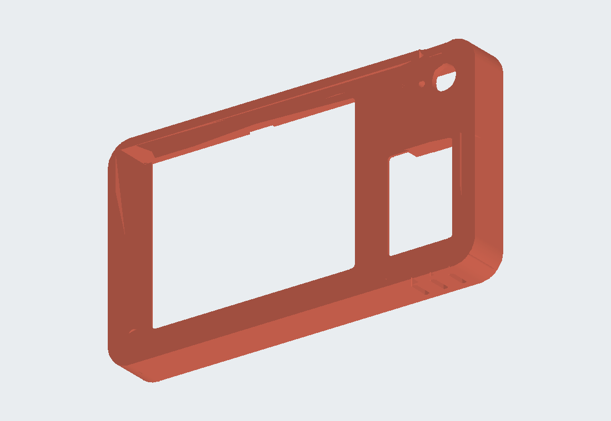
A slim case to mount near the morning routine. The current Rev9 uses four M2.5 heat-set inserts: three hold the display and help close the case, and a fourth secures the back plate's corner.
The views above are rendered from the current FreeCAD exports. The back view shows the shell's inside face; the back plate is shown separately. Geometry and photo colours are illustrative.
The slicer views show the shell and back plate for each model, plus Model B's separate stand. They are screenshots of sliced layers, before printing.
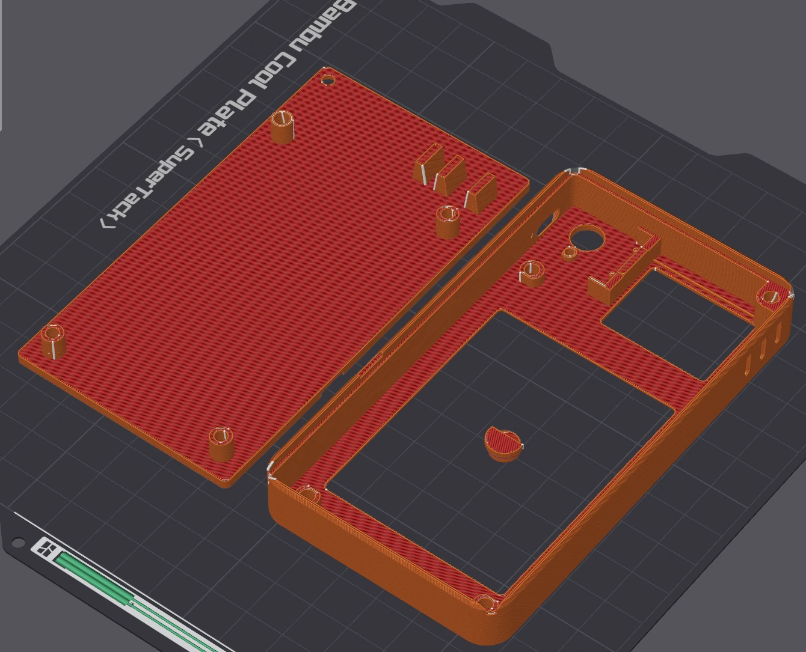
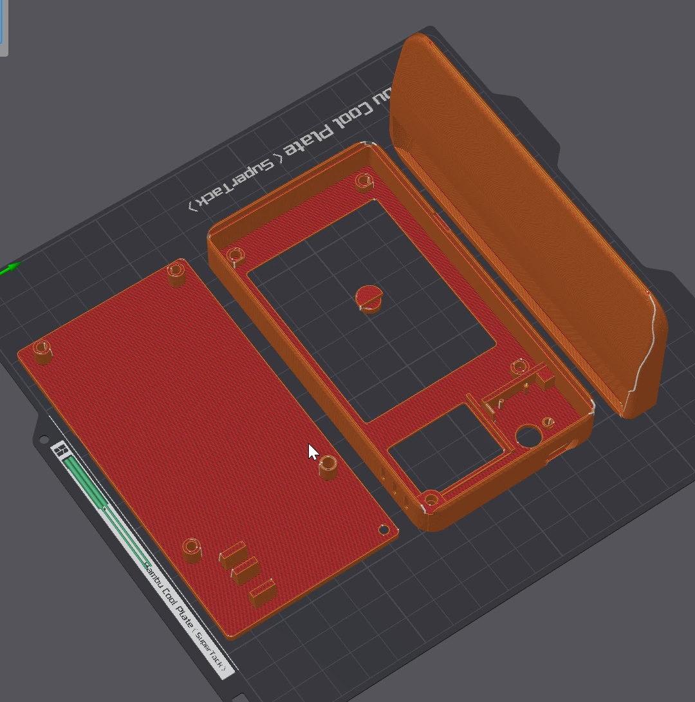
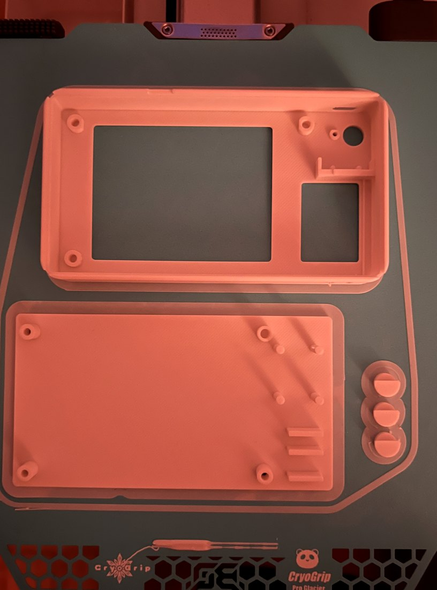
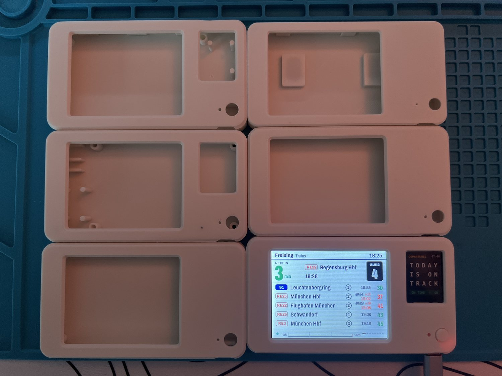
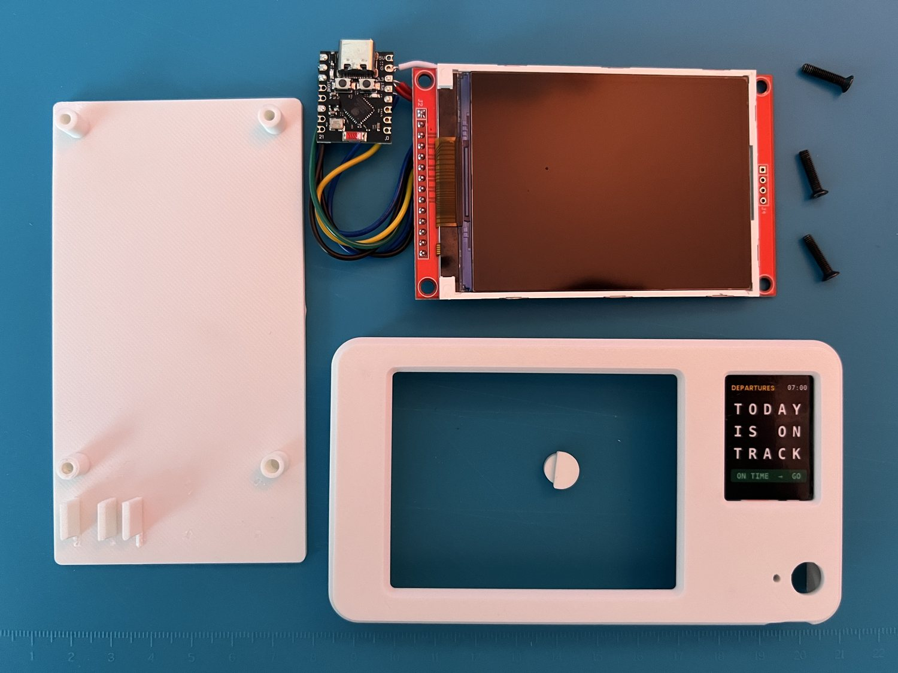
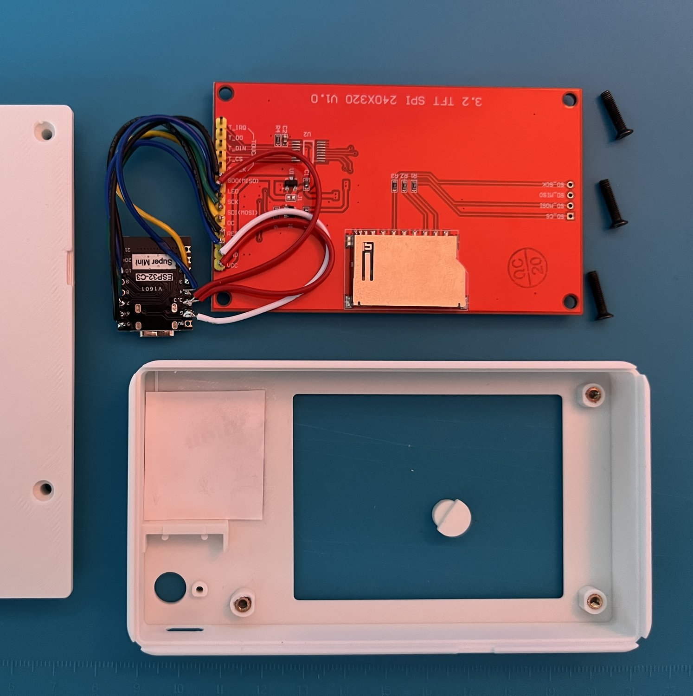
Two boards and nine wires
An ESP32-C3 Super Mini drives a 3.2-inch MSP3218 ILI9341 SPI display at 320 × 240 in landscape. The existing BOOT button doubles as the page and setup button. Touch and SD-card pins on the display are unused.
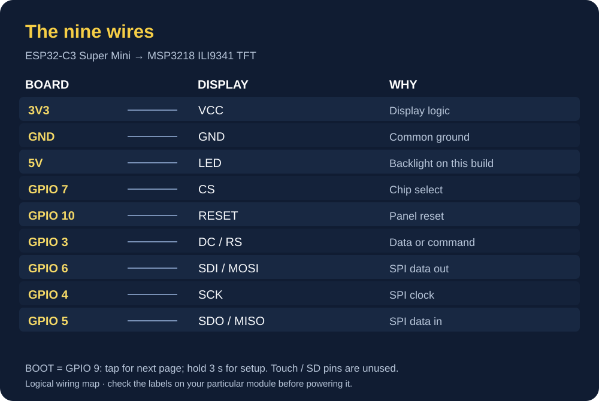
Backlight detail: the project drawing uses 5 V at the display's LED pin, while the MSP3218 manual describes 3.3 V for an always-on backlight. Check the exact board before copying that connection.
Leaving it on
At an assumed average draw of 0.75 W and continuous operation, Headway would use 0.018 kWh a day and 6.57 kWh in a year (0.00075 kW × 24 × 365). At an example energy price of €0.30/kWh, that is about €1.97/year in energy, excluding standing charges.
The 0.75 W figure is an estimate, not a documented meter reading for this revision. I still want to check it with a USB power meter.
Where the project stands
The current repository source is firmware 1.2.8. The screens were rendered on a PC and the logic, graph and setup checks passed. The 1.2.8 low-to-high temperature graph is represented in the new PC render; the phone photos and clips show earlier powered prototype pages and do not by themselves verify a flashed 1.2.8 build or the fit of the latest CAD. Those checks are described in the project status.
Transport data comes through Transitous; weather comes from Open-Meteo. Headway is my independent personal project, not an official transit product. Please do not scrape the original project plan, writing, diagrams, images, CAD or code into AI datasets or use them to recreate Headway without written permission. See the licence and permission guide.